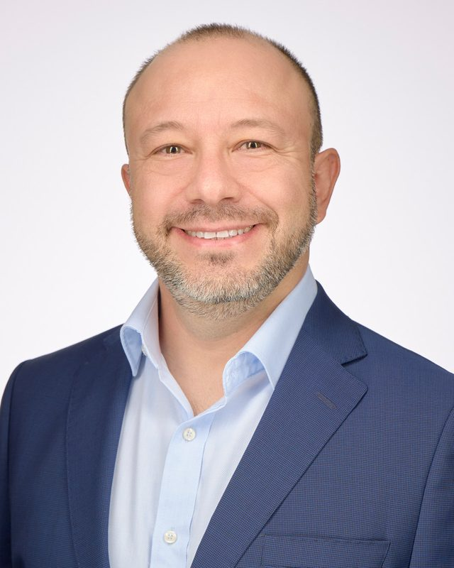

Over 20 years of experience in IT
Fractional Head of IT for mid-sized companies.
I lead your company's IT on a part-time basis, with the commitment your current stage requires: I bring order to technology operations, assess which vendor services are working and which need to improve, and take investment decisions to executive management with their cost, their risk and their alternative.
Get in touch See servicesHow I can help
Detailed service descriptions and articles are available in Spanish.

About me
Juan Pablo Swett Santander
I am a computer engineer (Ingeniero Civil en Computación e Informática) and hold a Master's in Information Technology and Management, both from Pontificia Universidad Católica de Chile.
I have over 20 years of experience in IT, most of them leading technology operations and transformations in Chile and Latin America. My experience combines day-to-day IT operations with high-impact projects: ERP, infrastructure, cloud, continuity, governance, integrations and corporate separations.
At IDT, a Chilean power electronics company, I built the infrastructure the company required, led the ERP implementation and introduced electronic invoicing to meet the requirements of mining customers.
After General Electric acquired IDT, I carried out the IT integration and, for more than eleven years, was responsible for technology operations in Chile and later in Latin America: vendors, service levels, continuity and support for business operations.
During GE's corporate separation, I was the regional point of contact for IT services and end-user technology support, coordinating teams and vendors to keep operations running.
Today I bring that experience to companies that need to put their IT operations in order, make better investment decisions, reduce vendor dependency, or move forward with ERP, cloud and artificial intelligence projects.
I work as a fractional Head of IT or on projects with defined scope and timeline, in Spanish and English.
Certified in Applied Generative AI by Johns Hopkins University. Full career history on LinkedIn →
What do you need to solve in your IT operations?
Tell me what decision you need to make, which vendor or system concerns you, or which process you want to evaluate. In a first conversation we review the situation and decide whether an assessment, fractional IT leadership or a pilot makes sense.